Sprzedaję samochód, który został sprowadzony dla mnie na zamówienie 2 lata temu. Auto w bardzo praktycznej 7-miejscowej konfiguracji, w skórzanej tapicerce, z dobrą specyfikacją wyposażenia. Automat, bezkluczykowy dostęp, świetne światła oraz świeże opony – wszystko, co potrzebne do komfortowej jazdy.ZWYKŁA BENZYNA nie hybryda
Przy sprowadzeniu auto miało uszkodzony tylko tylny zderzak oraz rysę na klapie bagażnika – te elementy zostały pomalowane. Przebieg w USA wynosił zaledwie 10 tysięcy km.
Do niedawna samochód był w pełni sprawny. Niestety, przy pierwszym śniegu zsunęliśmy się z drogi. Przedni zderzak został wymieniony, natomiast wymaga uwagi dolna część auta – do omówienia szczegółowo przez telefon.
Cena jest niska i adekwatna do stanu – wiem, ile faktycznie warte jest to auto.
Brak możliwości negocjacji.
Proszę dzwonić – wszystko dokładnie opowiem.
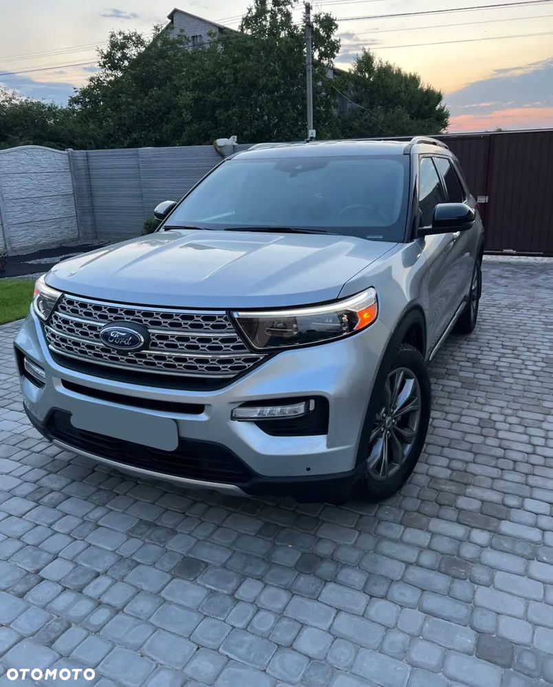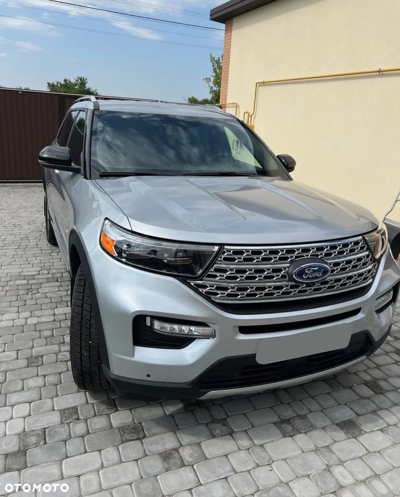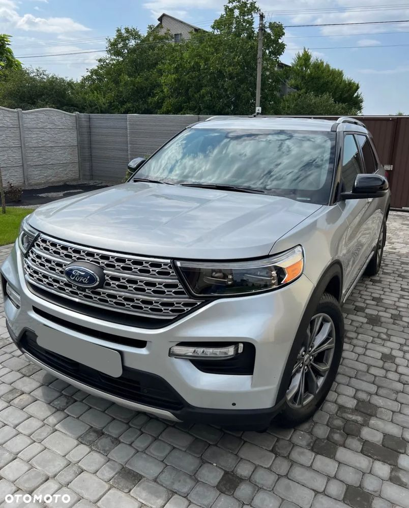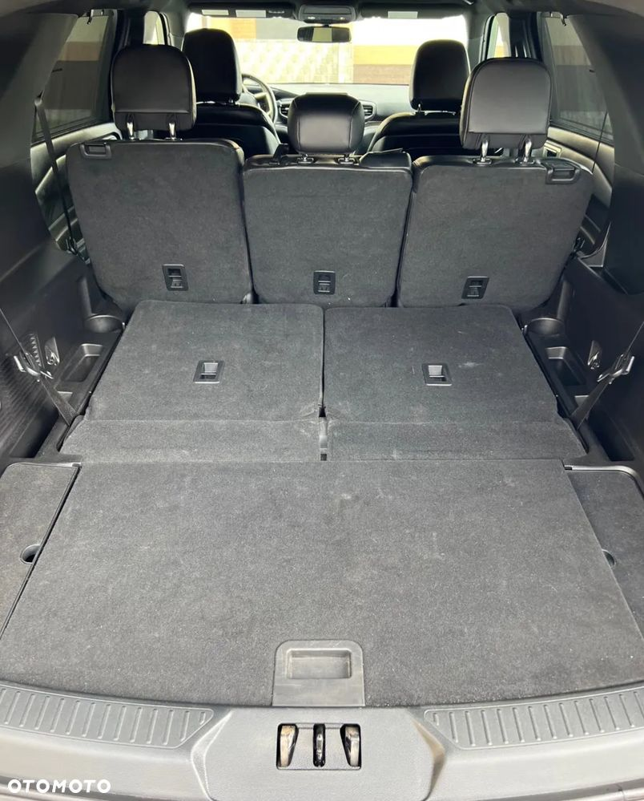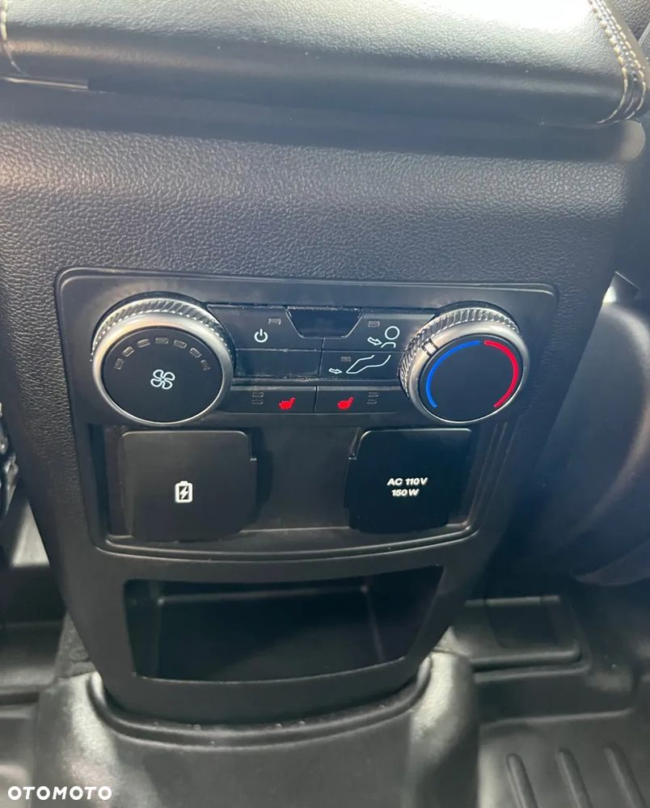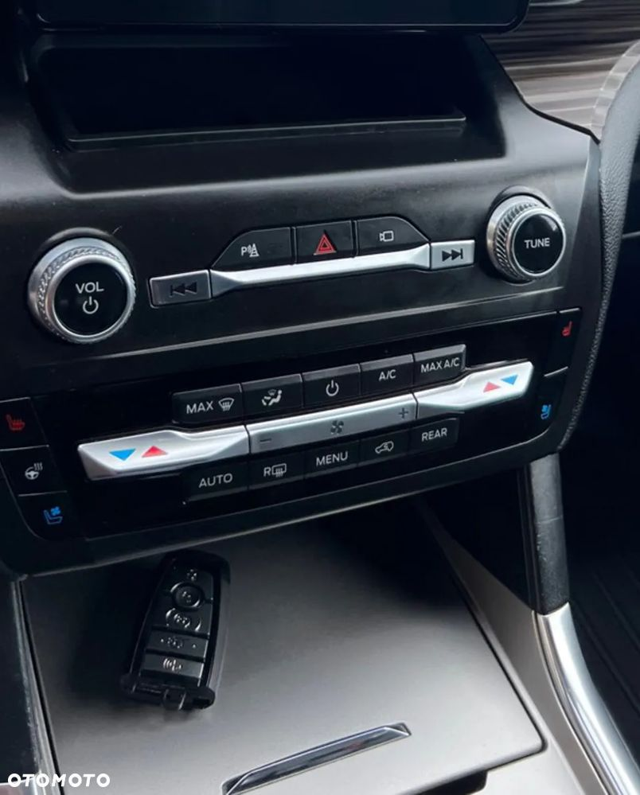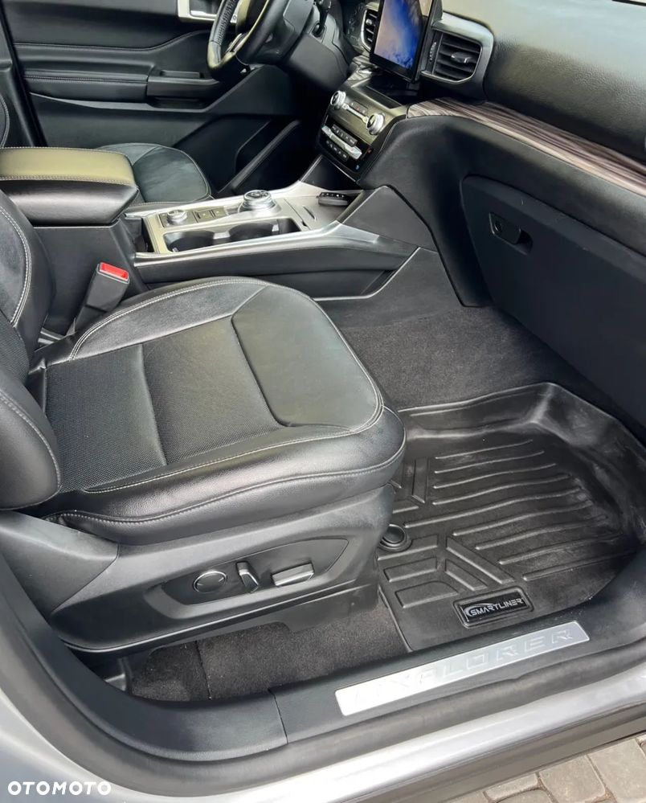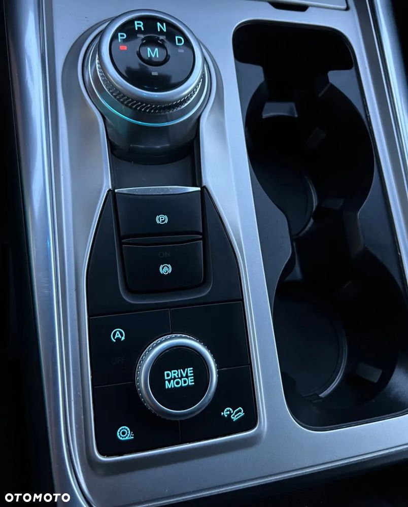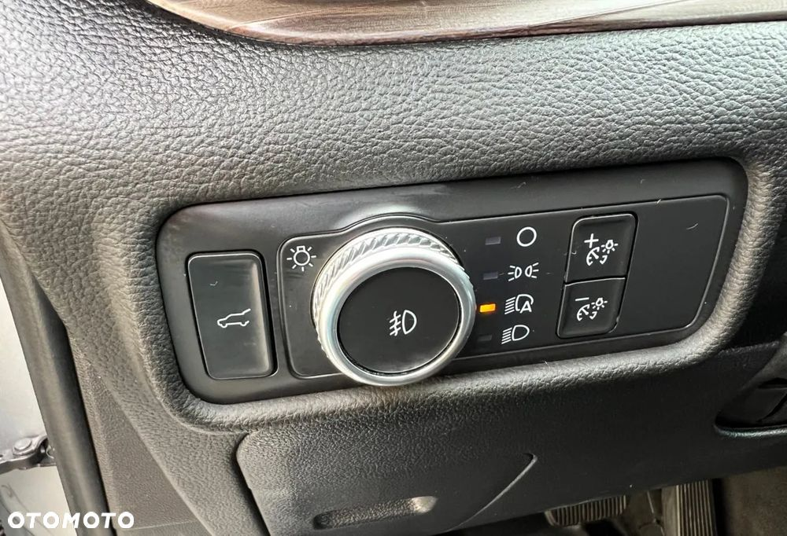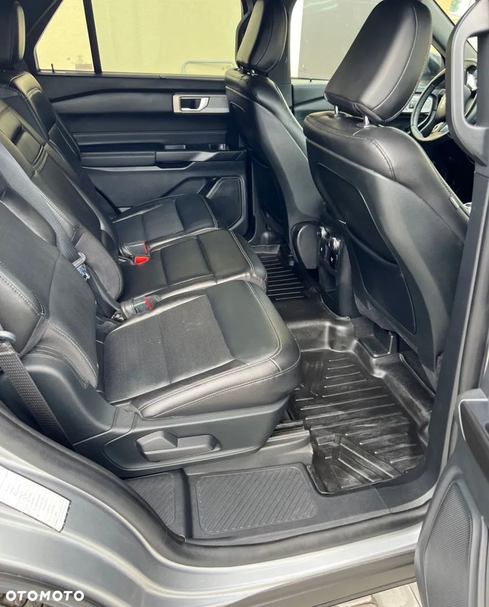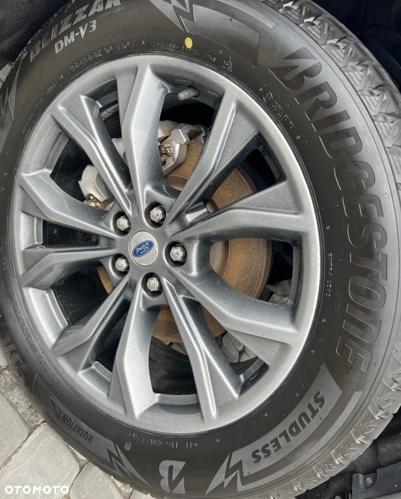